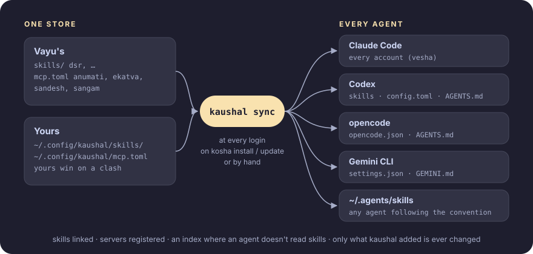

Kaushal (कौशल) is Sanskrit for "skill": what you teach once, every agent knows.
You use more than one AI agent: Claude Code (maybe on several accounts), Codex, opencode, Gemini CLI. Each keeps its own skills, its own MCP servers and its own global instructions, in its own format and folder. Teach one agent a job and the others don't know it; add a tool to one and the others can't use it; log in to a second Claude account and it has none of them.
kaushal keeps your skills and tools in one place and puts them into every agent it finds, so whichever agent you open, in whichever account, has all of them:
- Skills are folders with a
SKILL.md, the open Agent Skills format: a description saying when to use it, step-by-step instructions, and helper scripts. - Tools are MCP servers, listed once in
mcp.toml. kaushal synclinks the skills and registers the tools in each agent's own config, and runs at every login, so a newly installed agent or a new account gets everything without you doing anything.
It's part of Vayu, and ships Vayu's skills and tools, but works on its own: standard library Python, no dependencies.
#How it works

- One store. Skills and MCP servers are kept in one place: Vayu's in this repository, yours in
~/.config/kaushal/. - Written into each agent's own config.
kaushal syncputs them where each agent already looks, in its own format: skills are linked (so editing one takes effect everywhere at once), servers registered, and agents that don't read skill folders get a short index of the skills in their instructions file. Nothing runs between an agent and its tools: each loads them the way it always does, however it's started (ADR 2). - Only its own. It records what it added and never changes anything else (ADR 4).
- Always current. It syncs at every login and whenever kaushal is installed or updated, so a new agent, account or tool is covered without asking (ADR 5).
Why it's built this way: the decision records.
#Install
curl -fsSL https://raw.githubusercontent.com/Theyashsawarkar/kaushal/main/install.sh | bash
systemctl --user enable kaushal # sync at every loginOn Vayu, kosha install kaushal does both (Vayu starts the unit at login). It needs Python 3.11 or newer and git.
#Use
| Command | What it does |
|---|---|
kaushal | lists the skills, MCP servers and agents it found |
kaushal sync | gives every agent all of it (-n: only say what would change) |
kaushal doctor | checks every agent has everything; exit 1 if not |
kaushal unsync | takes back everything kaushal added |
kaushal new NAME | starts a skill of your own in ~/.config/kaushal/skills/NAME |
kaushal path [NAME] | where the skills (or one skill) live |
#Where each agent gets them
An agent counts when its command is on your PATH or its folder exists.
| Agent | Skills | MCP servers | Instructions |
|---|---|---|---|
| Claude Code | linked into ~/.claude/skills (reads them itself) | ~/.claude.json, and every vesha account's profile | (none needed) |
| Codex | linked into ~/.codex/skills | a marked block in ~/.codex/config.toml | index in ~/.codex/AGENTS.md |
| opencode | reads ~/.agents/skills itself | ~/.config/opencode/opencode.json | tools in its AGENTS.md |
| Gemini CLI | index in ~/.gemini/GEMINI.md | ~/.gemini/settings.json | index in GEMINI.md |
| any agent | linked into ~/.agents/skills, the convention's shared folder |
The index is a short block listing the tools and each skill's description with the path of its SKILL.md; agents that don't read skill folders themselves read it, and open a skill's file when a task matches.
It never touches what isn't its own. kaushal records what it added (~/.local/state/kaushal/state.json) and changes only that and its marked blocks; your other settings, servers and lines stay as they are, files are written atomically and keep their permissions, and a TOML file is checked before it's written. A skill folder or server of yours with the same name wins (sync says so). Remove a skill or server from kaushal and the next sync removes it from the agents; kaushal unsync takes everything back.
#Your own skills and tools
kaushal new standup # ~/.config/kaushal/skills/standup/SKILL.md
$EDITOR ~/.config/kaushal/skills/standup/SKILL.md
kaushal syncA skill's description is what agents choose it by: say what it does and when to use it. Your skills stay on your machine; a skill of yours with the same name as one of Vayu's replaces it.
Tools go in ~/.config/kaushal/mcp.toml, in the same form as mcp.toml:
[servers.mytool]
description = "What it gives agents"
command = "mytool"
args = ["mcp"]
env = { MYTOOL_AGENT = "{agent}" } # {agent}: claude, codex, gemini, opencode
[servers.sangam]
enabled = false # leave one of Vayu's outOnly servers whose command is installed are registered.
#Vayu's skills
| Skill | What it does |
|---|---|
dsr | Writes and sends your Daily Status Report: reconstructs the day from your commits across repositories, matches the format of your past DSRs, checks the timetable (start, end, lunch, no gaps) and sends a real HTML table through sandesh as a reply-all in your DSR thread, after you confirm. Settings: ~/.config/kaushal/dsr.toml (example). |
#Vayu's tools
| Server | What it gives agents |
|---|---|
| anumati | root commands, run only after you approve each one |
| ekatva | your phone: status, ring, lock, SMS and calls (asks you first), clipboard, files |
| prasar | posts to your X and LinkedIn: check, draft, propose (every post asks you first) |
| sandesh | your Gmail and Google Chat (sends ask you first) |
| sangam | your GitHub pull requests (comments, reviews and merges ask you first) |
#In Vayu
On Vayu, kaushal is part of the desktop: every AI agent you start, from a terminal, tmux, an editor or the launcher, has Vayu's skills and tools from its first message.
- Installed by kosha with the rest of Vayu's tools (
kosha install kaushal; Vayu's installer does it). Itsinstall.shlinks~/.local/bin/kaushaland the login unit and runs the first sync. - Synced at every login:
kaushal.serviceis one of the units Vayu's session starts (sway-session.sh'sUNITS), and whenever kosha installs or updates kaushal. A tool you install with kosha reaches your agents at the next login, or at once withkaushal sync. - Every Claude Code account: vesha keeps each account in its own profile; kaushal gives every profile the tools (ADR 6).
- Vayu's tools for agents are its MCP servers: anumati (root commands), ekatva (your phone), prasar (posts to X and LinkedIn), sandesh (mail and chat), sangam (pull requests). Each asks you before anything reaches other people or runs as root.
- Vayu's rule: a new skill or agent-facing tool goes into kaushal (a skill folder or an
mcp.tomlentry), never into one agent's config by hand, so every agent gets it. Vayu'sCLAUDE.mdandAGENTS.mdsay so, for the agents working on Vayu itself. - Your settings for Vayu's skills stay on your machine, in
~/.config/kaushal/(thedsrskill's indsr.toml). - Check it:
kaushal doctor, orkaushalfor what's there.
#License
MIT